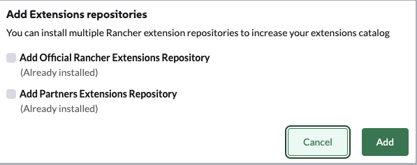

Início rápido
Este início rápido explica como usar Ollama para fornecer capacidades de LLM a Liz. Você pode trocar de provedores após a instalação inicial referindo-se a Procedimentos para Administradores.
Pré-requisitos
A versão atual do Assistente de IA requer os seguintes componentes:
-
Rancher Prime/Gerenciador da Comunidade 2.13 ou superior
Certifique-se de que você tem os direitos para implantar CRD (cluster_admin) no cluster host.
Requisitos Técnicos
Aqui está uma tabela dos componentes de IA suportados e seus requisitos.
|
Você só precisa atender aos requisitos para os componentes específicos que pretende executar. Os requisitos variarão com base no modelo de linguagem de grande escala (LLM) específico que você escolher implantar. |
| Modelo LLM | Requisitos | Requisito de GPU |
|---|---|---|
Ollama instalado |
NVIDIA RTX A5000, NVIDIA RTX 4090 ou similar (Mínimo 24Gb VRAM) |
|
Ollama instalado |
NVIDIA A100 ou similar (Mínimo 80Gb VRAM) |
|
Gemini |
Conta do Google Workplace |
N/A |
ChatGPT |
Conta do OpenAI |
N/A |
AWS Bedrock |
Conta da AWS |
N/A |
Fornecedor semelhante ao OpenAI |
Conta do Azure, Evroc Think, … |
N/A |
|
A lista de modelos testados está disponível na documentação de Modelos. |
|
Se você executar seu próprio Ollama, certifique-se de ter pelo menos |
Instale Liz: The Rancher AI Assistant
A instalação de Liz é um processo em duas etapas:
-
Implante o agente e o MCP via o gráfico Helm fornecido.
-
Implante a extensão da interface do Rancher.
Instale o Agente e o MCP no cluster local
-
Crie um arquivo de configuração
values.yaml(para Ollama):ollamaLlmModel: "gpt-oss:20b" ollamaUrl: "http://ollama:11434" activeLlm: "ollama"Você pode alterar essas configurações e provedores mais tarde nas abas 'Configurações Globais → Assistente de IA' do Rancher.
-
Instale o chart rancher-ai-agent
helm install rancher-ai-agent \ --namespace cattle-ai-agent-system \ --create-namespace \ -f values.yaml oci://registry.suse.com/rancher/charts/rancher-ai-agent
Instale a extensão da interface do usuário
Abra a interface do usuário do Rancher Manager e navegue até a página 'Extensões'.
-
No Rancher Manager, clique em Extensão na barra de menu.
-
Use o menu de três pontos no canto superior direito e selecione 'Adicionar Repositórios do Rancher'.

-
Selecione 'Adicionar Repositório Oficial de Extensões do Rancher' para adicionar o repositório.

-
Clique em 'Adicionar'.
-
Encontre o cartão do Assistente de IA e clique em 'Instalar'.
-
Selecione uma versão (ou use a mais recente por padrão) e clique em 'Instalar'.

-
Uma vez que a extensão tenha terminado de instalar, clique no botão 'Recarregar' que aparece na parte superior da página.